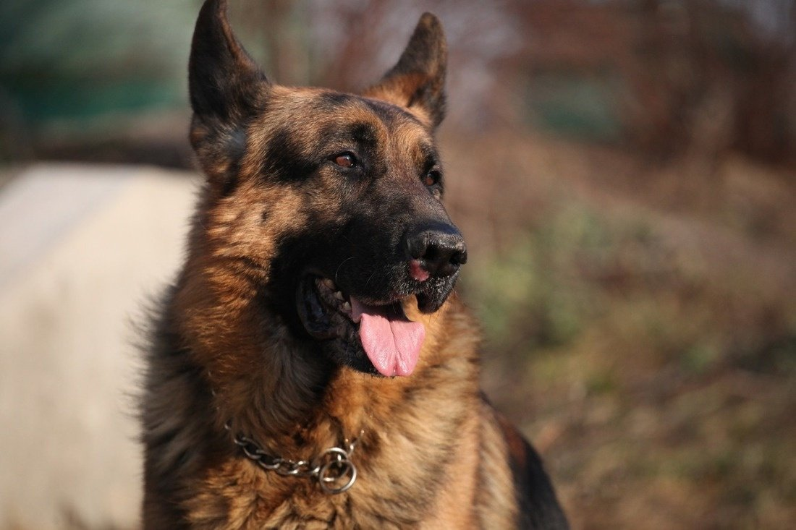

Граф Шутц Хунд
Известен в сериале «Пёс» как: Пёс

О собаке по кличке Граф Шутц Хунд:
Собаки, игравшие в сериале Пёс, меняли друг друга в течение съёмок. За время проекта в
роли «Пса» снимались 5 немецких овчарок
В первых трёх сезонах блистали Граф и Рекс. Рекс подменял Графа по мере необходимости.
Рекс менее послушный, чем Граф. Съёмки ему давались сложнее, поэтому главную часть
проекта тянул на себе Граф. На протяжении 4-6 сезонов Пса играл сын Графа Мухтар. Затем,
в 5-6 сезоне подключили
сына Мухтара – Норда. В 6 сезоне снимается также второй сын Мухтара – Ник. Все собаки
прошли общий курс дрессировки, защитный курс и часть из циркового. Работают
на площадке под руководством кинологов.
Рабочий день у собак по 10-12 часов как у артистов. Конечно, у них есть отдых, когда
идут сцены без собаки или перестановки декораций. В это время собака может поспать или
погулять. Но, тем не менее, отдыхать, зная, что вот-вот вызовут на площадку, не так уж и
легко.
Мухтар Шутц Хунд:
Сын Графа родился, когда папа снимался в проекте «Возвращение Мухтара». В то время на
съёмках Графа все называли «Мухтаром». Это делалось для того, чтобы он привык и легко
отзывался на новую кличку в кадре. Малыша тоже назвали Мухтаром. Поскольку сериал
снимался 3 сезона. В планах рассматривали съёмки молодой собаки на смену отцу.
Граф до съёмок в проекте «Пёс» снялся в 200 сериях сериала «Возвращение Мухтара». Его
сын в сериале «Пёс» начал сниматься впервые. Поначалу собаке было сложно. Главному герою
Никите Панфилову (Максу) пришлось затратить немало усилий, чтобы сработаться с ним. Нужно было начать с выстраивания дружественных и рабочих отношений. На площадке
существует строгое правило, Кормить и гладить собаку должен только Никита Панфилов.
Чтобы у пса была мотивация к выполнению трюков. Тем не менее, втихаря от кинологов, все
артисты стараются подкормить собачку. И тем сбивают работу пса.
Собаки, которые играли в сериале «Пёс»:
Все собаки из одной семьи: Граф Шутц Хунд, Рекс Шутц Хунд, Мухтар Шутц Хунд, Норд Шутц
Хунд и Ник Шутц Хунд. Артисты успешно справились с работой. Все по праву заслужили
любовь и восхищение зрителей.